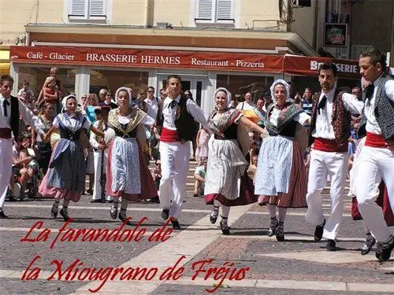
Danses & costumes
« La Danse est l'âme de la Patrie. Elle est au cœur même de la civilisation provençale, au même titre que la langue et plus encore… »
Des siècles de tradition en mouvement
La danse provençale est l'une des rares danses régionales à la fois à l'origine de pas de la danse classique d'opéra et fidèle aux principes du ballet baroque : cinq positions de Beauchamp, demi-pointe et règle absolue de l'en-dehors.
Accompagnée par les tambourinaires, la quarantaine de danseurs de La Miougrano exécute aussi bien des danses de caractère à la virtuosité époustouflante que des danses de couple, bals du XVIIIe et du XIXe siècle.
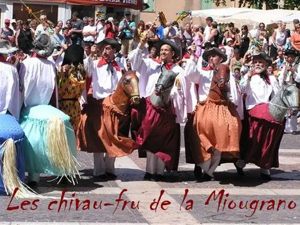
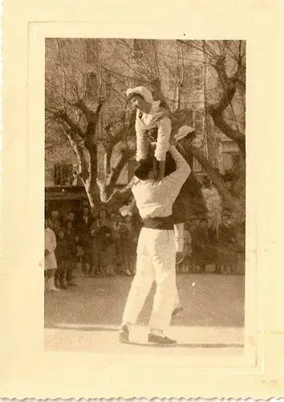
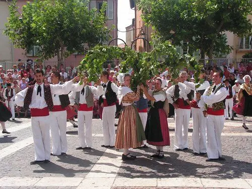
Souche, jardinières, chivau-frus
La danse de la souche, sacrée, n'est exécutée qu'au sortir d'une messe : les jeunes filles dansent autour d'un feu béni, l'une d'elles y jette un cep de vigne en symbole de fertilité. Les jardinières évoluent avec leurs arceaux ornés de pampres.
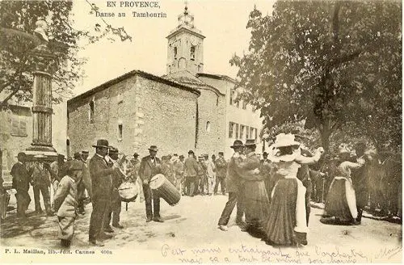
Volte, rigaudon, gavotte, menuet
Entre 1715 et 1914, chaque commune avait presque un bal par semaine, animé par un tambourinaire. Fricassée, volte, rigaudon, contredanse, puis polka, valse et quadrille.
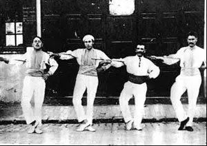
Pas grec, anglaise, matelote
Héritées des « prévôts » et « maîtres de danse », ces danses de caractère demandent une grande virtuosité. Aujourd'hui encore, les meilleurs élèves passent leur brevet de prévôt et de maître.
Créations du groupe La Pistachière, la Boumiane, le Cascaveu, le Rigaudon dei Calignaire… la tradition continue de s'écrire.
Galoubet, tambourin, fifre & tambour
Le tambourinaire est un double instrumentiste : il joue la mélodie au galoubet de la main gauche et frappe le tambourin avec la massette de la main droite.
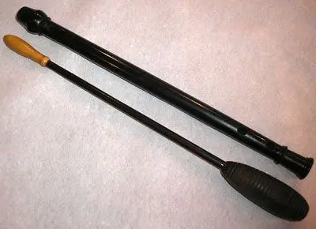
Le galoubet
Petite flûte à bec d'environ 30 cm, à trois trous, qui se joue d'une main. Tournée dans le buis, l'olivier ou l'ébène, avec une languette en bois de cade.
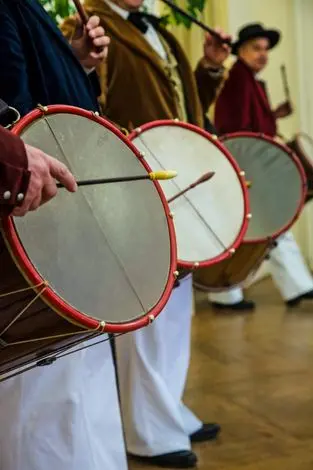
Le tambourin
Fût de noyer sculpté d'environ 70 cm, cerceaux peints en rouge, chanterelle qui vibre : il joue le bourdon rythmique qui accompagne le galoubet.
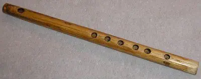
Le fifre
Petite flûte traversière à six trous, fabriquée par nos musiciens en canne de Provence de la vallée de Fréjus, réputée pour sa qualité.
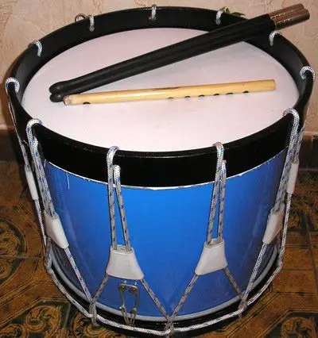
Le tambour
Indissociable du fifre depuis le XVIIe siècle à Fréjus, il anime défilés et processions de la Bravade, avec le bacchas, gros tambour provençal.
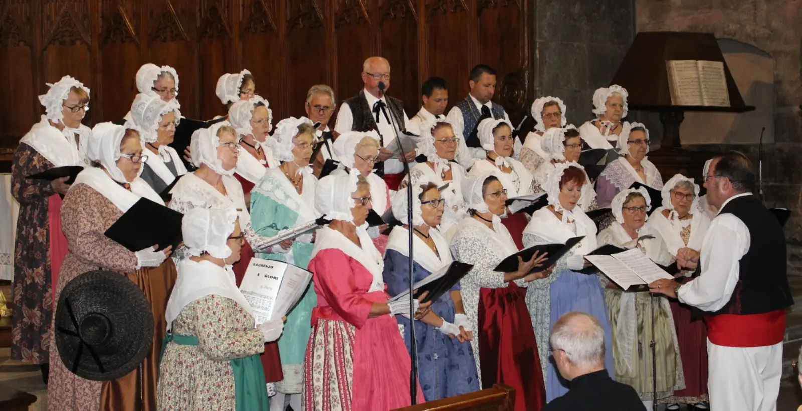
Une chorale en costume
Une trentaine de chanteurs interprètent un répertoire très large en français comme en provençal, des chansons médiévales en langue d'oc aux compositions provençales modernes, profanes ou religieuses — varoises, aixoises, nissardes ou piémontaises.
En concert, les musiciens s'accompagnent aussi de flûtes à bec, cromorne, fresteù ou fifre pour révéler la musique provençale du Moyen Âge à nos jours.
Fréjus, vers 1830
Tout le groupe évolue en costume provençal de l'époque 1830. Chacun s'habillait selon son rang : paysans, artisans et bastidans.
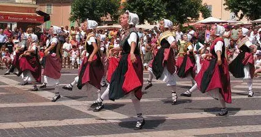
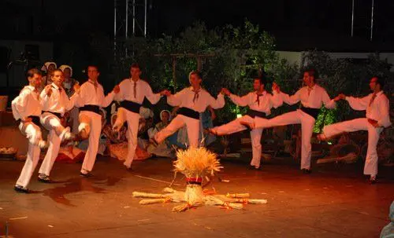
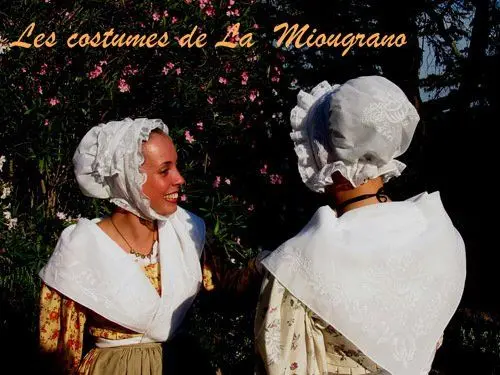
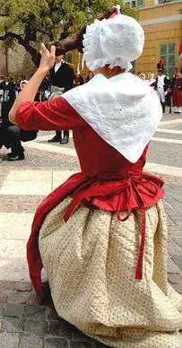
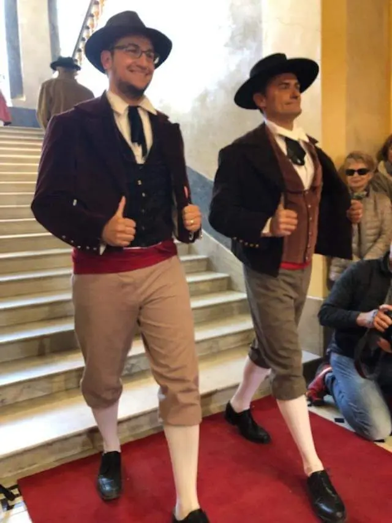
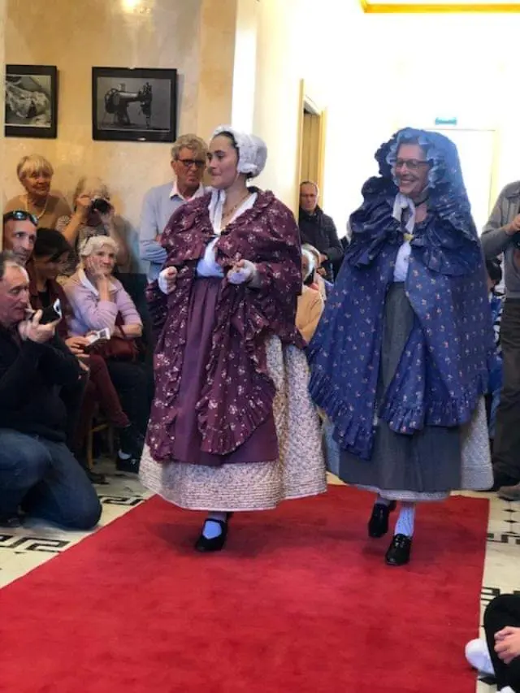
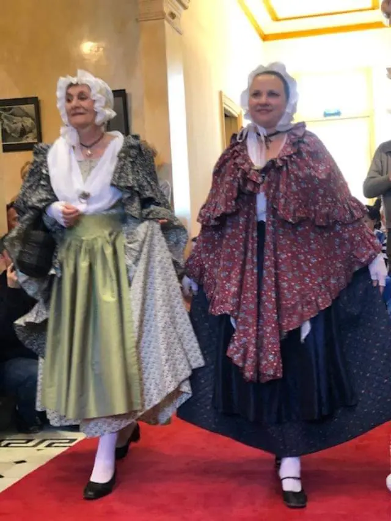
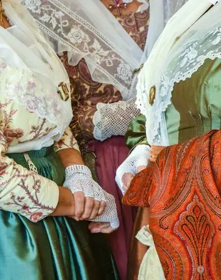
Plus de 500 costumes cousus main
Une dizaine de couturières recherchent et reconstituent les anciens vêtements fréjusiens à partir des collections du groupe : spencer des artisans, cape et coiffe de paysanne… Point de croix, jupes piquées, boutis, broderies : un savoir-faire qui se transmet de génération en génération.
L'atelier a largement contribué à l'ouvrage collectif Le costume populaire de Provence et organise expositions et défilés de costumes anciens avec le musée des Amis du Pays de Fréjus.
Rejoindre l'atelier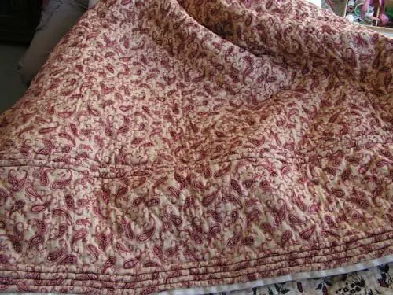
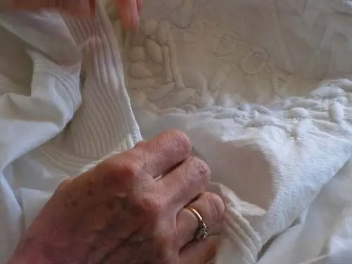
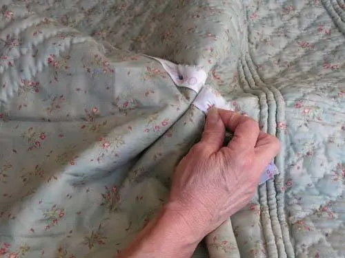
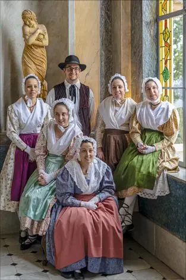